Рынок
редкоземельных
магнитов Индии
Введение
Рынок редкоземельных магнитов в Индии по первому впечатлению выглядит как Клондайк XXI века. Он не очень велик в абсолютных цифрах, зато, по прогнозам, может удвоиться в течение ближайших пяти лет. В 2025 году инициативы правительства страны по оживлению отрасли следовали одна за другой. Их подкрепляет ряд публикаций, буквально агитирующих малый и средний бизнес входить в отрасль, с развитием которой в одиночку не справился крупный государственный монополист.
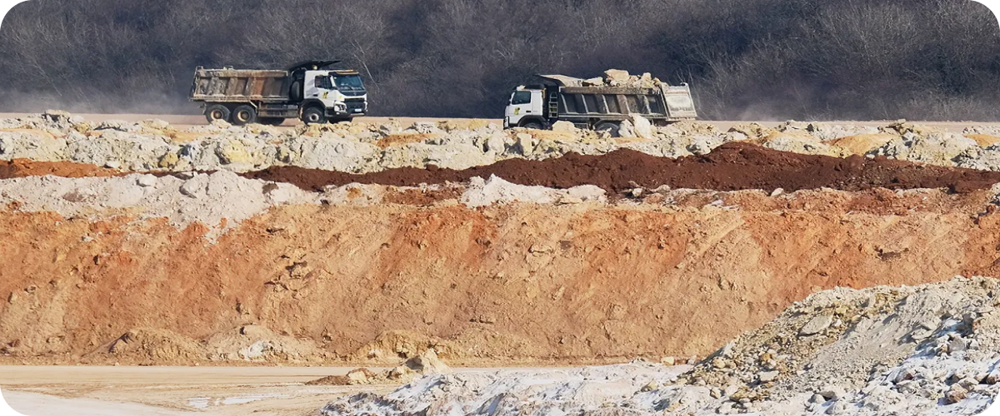
И это при том, что запасы редкоземельных металлов в Индии буквально лежат под ногами:
семь крупнейших месторождений страны — это просто морской песок на гигантском побережье полуострова Индостан.
События на мировом рынке в 2025 году развивались как идеальный шторм, к которому все шло долгие годы. В последнее десятилетие мощных магнитов все больше требовали как традиционные, так и новые быстроразвивающиеся отрасли: робототехника, ветрогенерация, электромобили, сенсоры, в том числе военного назначения (системы радиолокации и наведения).
Лидирующие позиции в добыче сырья, изготовлении магнитов и готовых изделий прочно занял Китай, приучивший мировых потребителей закупать более 90% РЗМ именно у него. Но в ходе торгового спора с США в 2025 году Пекин вводит экспортный контроль за редкоземельными магнитами как для Штатов, так и для для стран, близких к ним. Цепочки поставок рвутся по всему миру, крупнейшие заводы уходят в простой. Правительства и корпорации осматриваются по сторонам в поисках альтернативы китайским магнитам. Индия, обладающая крупнейшими запасами редкоземов, хочет откусить большой кусок магнитного пирога у своего главного геополитического конкурента — Китая.
Но, увы, пока не может. В 2024 страна, владеющая третьими по мировому объему запасами сырья, произвела меньше процента готовой продукции, в сто раз меньше, чем тот же Китай. Не хватает собственных мощностей, технологий переработки, да и финансирование по-прежнему недостаточное.
И хотя власти всеми силами стремятся догнать конкурента, времени на раскрутку немного — США уже начали исследовать получение мощных и компактных магнитов из альтернативных материалов, чтобы вообще не зависеть от редкоземельных поставок.
Редкоземельные
магниты — из чего и для чего?
Разработка новых магнитных материалов на основе редкоземельных металлов началась в 1960-е годы, когда исследователи Лаборатории материаловедения ВВС США (Air Force Materials Laboratory) обнаружили особые магнитные свойства сплавов самария и кобальта (SmCo5 и Sm2Co17). Как оказалось, редкоземельные металлы — лантаниды — из-за особенностей строения электронного облака их атомов обладают способностью создавать более плотное и устойчивое магнитное поле, чем ферромагнетики и сплавы алюминия-никеля-кобальта. Это позволило получать мощные и стабильные постоянные магниты гораздо меньшего размера и веса. Уже в 1970-е годы началось коммерческое производство самарий-кобальтовых магнитов. Их применение позволило сделать миниатюрнее и мощнее различные устройства — электродвигатели, генераторы, датчики и актуаторы, прежде всего для военного и космического применения, где важны компактность, мощность и способность сохранять магнитные свойства при температуре до 550 °C.
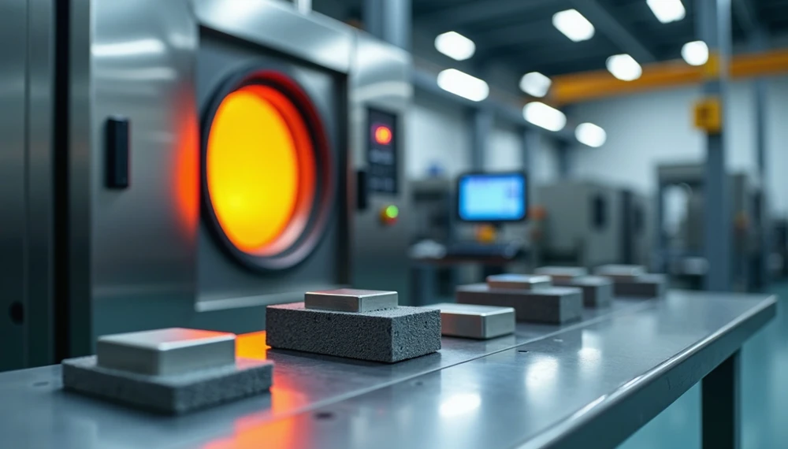
В 1983 был получен новый редкоземельный магнитный сплав — неодим-железо-бор (Nd2Fe14B). Неодимовые магниты оказались еще более мощными и компактными. Но в чистом виде они уступают самариевым в термостойкости и легко подвергаются коррозии. Для повышения коэрцитивной силы (магнитной устойчивости) и улучшения высокотемпературных характеристик в сплав добавляют небольшие количества тяжелых редкоземельных элементов диспрозия (Dy) и тербия (Tb). Кроме того, часть неодима может быть заменена элементом с очень близкими свойствами — празеодимом (Pr). Празеодим-неодим составляет порядка 30% магнитного сплава по массе, а диспрозий и тербий используются как присадки.
В зависимости от процесса производства NdFeB-магниты делятся на спеченные, связанные (склеенные) и горячепрессованные. Магниты, изготовленные путем спекания, получаются более мощными и компактными, но они дороже в производстве и достаточно хрупки. Это наиболее распространенный тип редкоземельных магнитов. Связанные (с помощью клея, смолы, пластика) магниты могут принимать практически любую форму, они более устойчивы к механическим воздействиям, но менее мощны и эффективны при той же массе.
В современной промышленности редкоземельные магниты за счет эффективности и компактности все чаще вытесняют традиционные.
Для создания электромобиля используется до 3 кг редкоземельных магнитов, для человекообразного робота — около 4 кг, для офшорного ветрогенератора — свыше 2 тонн.
Американский истребитель F-35 Lightning II содержит 400 кг РЗМ в электроприводах, исполнительных механизмах рулевых поверхностей и радаре. Эсминец класса Arleigh Burke Aegis содержит около 2,3 тонны, а подводная лодка класса Virginia — более 4 тонн: в двигателях, генераторах, навигационных и радиолокационных системах.
Мировой рынок РЗМ
Прогноз роста
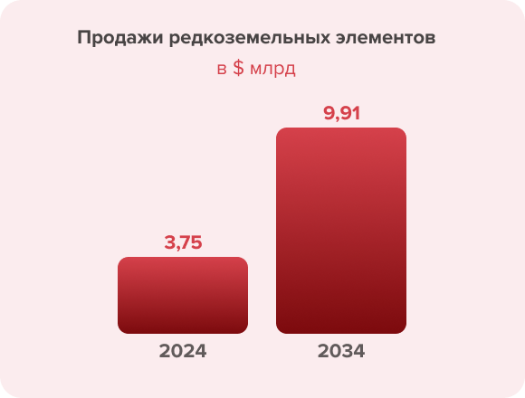
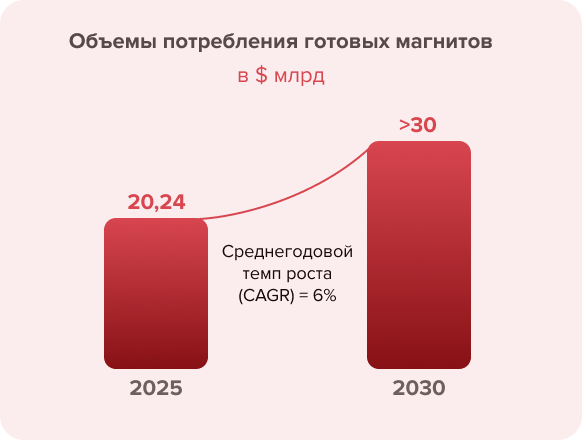
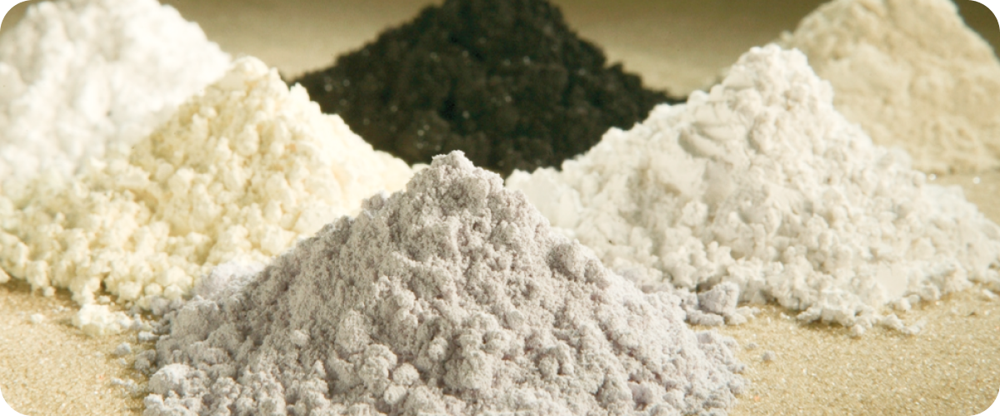
Объем мирового рынка редкоземельных элементов в 2024 году оценивался в $3,75 млрд, а к 2034 году, по прогнозам, достигнет $9,91 млрд, чему будут способствовать спрос со стороны секторов чистой энергетики, электромобилей и передовой электроники. Отраслевые аналитики полагают, что спрос на некоторые редкоземельные элементы, такие как неодим и празеодим, будет увеличиваться на 8,4% в год в течение следующего десятилетия, особенно в связи с растущим использованием магнитов в электродвигателях.
Что касается готовых магнитов, то потребление в 2025 году оценивается на уровне 385 тыс. тонн, что в денежном выражении составляет $18,86–21,98 млрд. Ожидается, что к 2030 году объем рынка превысит $30 млрд, что обусловлено среднегодовым темпом роста (CAGR) более 6%. Основные драйверы рынка — рост числа электромобилей (EV), развитие возобновляемой энергетики (ветряные турбины) и высокоэффективная промышленная автоматизация (роботы).
Запасы редкоземельных металлов —
доминирование Китая
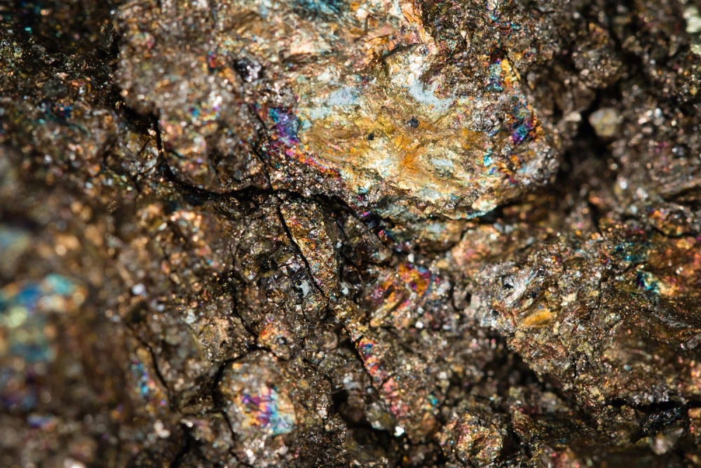
Мировые запасы редкоземельных элементов (РЗЭ) значительны, но географически распределены неравномерно. По данным Геологической службы США, мировые запасы оцениваются примерно в 90 млн тонн содержащихся в них оксидов редкоземельных элементов (REO). Крупнейшие запасы находятся в Китае, где сосредоточено около 44 млн тонн (примерно половина известных мировых запасов редкоземельных элементов). Бразилия занимает 2-е место с примерно 21 млн тонн, а Индия — 3-е с 6,9 млн тонн. К числу других стран со значительными запасами относятся Австралия (5,7 млн тонн) и Россия (3,8 млн тонн), Вьетнам (3,5 млн тонн) и Соединенные Штаты (1,9 млн тонн).
Мировые запасы редкоземельных элементов (РЗЭ) значительны, но географически распределены неравномерно. По данным Геологической службы США, мировые запасы оцениваются примерно в 90 млн тонн содержащихся в них оксидов редкоземельных элементов (REO). Крупнейшие запасы находятся в Китае, где сосредоточено около 44 млн тонн (примерно половина известных мировых запасов редкоземельных элементов). Бразилия занимает 2-е место с примерно 21 млн тонн, а Индия — 3-е с 6,9 млн тонн. К числу других стран со значительными запасами относятся Австралия (5,7 млн тонн) и Россия (3,8 млн тонн), Вьетнам (3,5 млн тонн) и Соединенные Штаты (1,9 млн тонн).
Индия занимает третье место в мире по запасам редкоземельных металлов
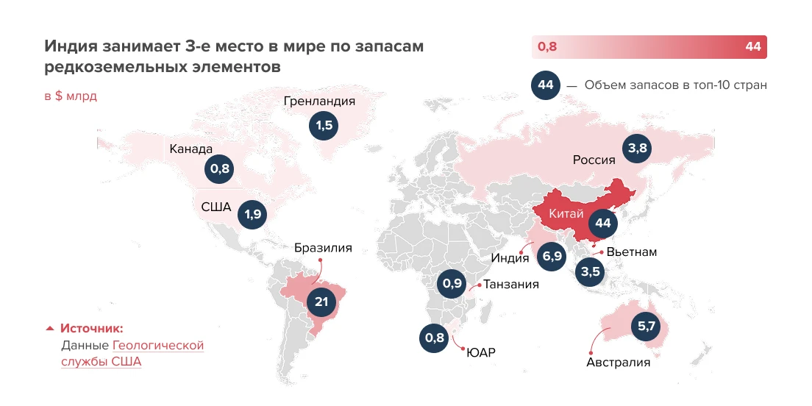
Резервы РЗЭ Индии — географическое распределение
По данным, приведенным министром горнодобывающей промышленности Индии Джитендрой Сингхом летом 2025 года, этот показатель несколько выше — 8,5 млн тонн.
Из них 7,23 млн тонн оксидов редкоземельных элементов (REO) содержатся в монаците на побережьях и в речных россыпных песках в штатах Керала (Чавара), Тамил Наду (Манавалакуричи), Одиша (Чатрапур), Андхра-Прадеш, Западная Бенгалия, Джаркханд, Гуджарат и Махараштра, а еще 1,29 млн тонн редкоземельных элементов находятся в твердых породах в отдельных районах Гуджарата и Раджастана.
По словам министра, Геологическая служба Индии (GSI) увеличила запасы редкоземельных элементов (РЗЭ) в рамках 34 разведочных проектов.
Объем экспортированных редкоземельных минералов за последние 10 лет составил 18 тонн, при этом импорта редкоземельных минералов не было.
Министерство участвует в различных двусторонних и многосторонних платформах, таких как Партнерство по обеспечению безопасности минеральных ресурсов (MSP), Индо-Тихоокеанская экономическая рамочная программа (IPEF) и Инициатива по критически важным и перспективным технологиям (iCET), для укрепления цепочки создания стоимости критически важных минералов, пояснил он.
Резервы редкоземельных элементов в штатах Индии
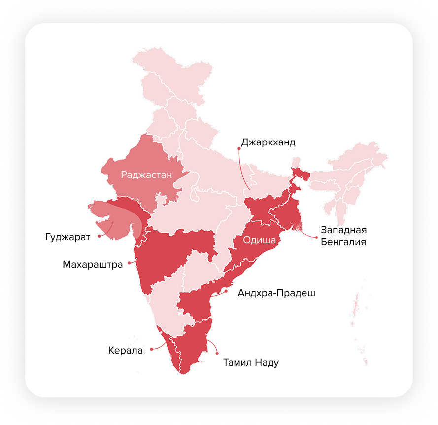
Добыча
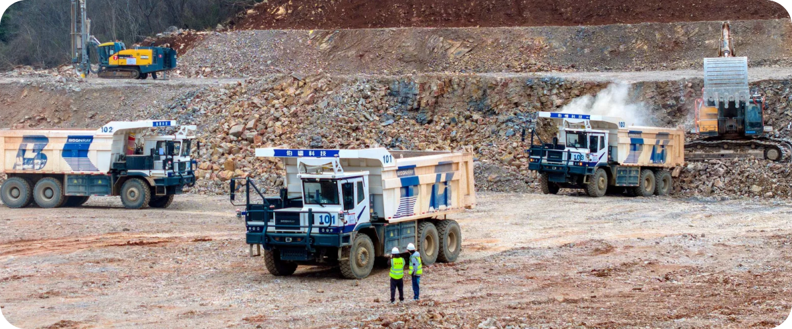
Теоретически ресурсная база диверсифицирована — Китай владеет значительной долей, но не монополией на резервы. Однако добыча редкоземельных элементов распределяется еще более неравномерно, чем их запасы. В 2024 году она составила около390–400 тыс. тонн эквивалента редкоземельных оксидов. Китай лидирует с огромным отрывом, на его долю в 2024 году пришлось около 270 тыс. тонн — примерно 68% мирового производства. Соединенные Штаты значительно отстали — 45 тыс. тонн (с рудника Маунтин-Пасс в Калифорнии). Среди других крупных производителей можно отметить Мьянму (порядка 31 тыс. тонн, в основном тяжелых редкоземельных элементов, добываемых и отправляемых в Китай), а также Нигерию, Таиланд и Австралию — каждая из них производит около 13 тыс. тонн.
Индия в 2024 году добыла всего около 2,9 тыс. тонн, что составляет менее 1% от мирового показателя. Несколько других стран (Россия, Мадагаскар, Вьетнам, Бразилия, Малайзия) также произвели скромные объемы, в совокупности составившие лишь несколько тысяч тонн.
Надо отметить, что, хотя редкоземельные металлы и объединяются в один класс, цены на них существенно отличаются. Например, справочные цены в США были в 2024 году следующими: оксид неодима — $56 за кг, оксид диспрозия — $260 за кг, оксид тербия — $810 за кг. В распоряжении Индии находятся главным образом легкие РЗМ, из которых для производства магнитов используется неодим.
Важно
Значительная роль Китая в горнодобывающей промышленности отчасти объясняется исторически более низкими затратами и более мягкими экологическими нормами. Это позволило ему нарастить объемы выпуска, когда другие страны (например, США) в 1990-х годах сократили производство.
Переработка
После добычи и обогащения руды ее необходимо химически разделить на отдельные оксиды редкоземельных элементов или металлы — это сложный процесс, включающий этапы экстракции растворителями.
Важно
Китай контролирует около 90% мировых мощностей по переработке редкоземельных элементов и порядка 99% переработки тяжелых редкоземельных элементов (группы более редких элементов, таких как Dy, Tb, Eu). Это означает, что почти все редкоземельное сырье, даже если оно добывается в США, Африке, Азии, в конечном итоге отправляется в Китай для разделения на пригодные для использования высокочистые оксиды.
Это преимущество распространяется и на производство постоянных магнитов, где Китай доминирует в поставках для производства электромобилей, ветряных турбин и продукции для оборонной промышленности. Эти возможности в последующих звеньях цепочки поставок основаны на специализированной металлургии, высокоточной обработке и системах контроля качества, разработанных за десятилетия, что укрепляет структурный контроль Китая над циклом создания стоимости редкоземельных элементов.
Начиная с 1980-х годов правительство рассматривало редкоземельные элементы как стратегические материалы, быстро наращивая их производство за счет субсидированного финансирования и скоординированных инвестиций в инфраструктуру.
Объемы производства резко выросли: с 15 тыс. тонн (1980 год) до 60 тыс. тонн (2000 год), что обеспечило снижение удельных затрат. Кроме того, Китай стал лидером в области переработки и технологий, создавая совместные предприятия с зарубежными компаниями, проводя исследования силами государственных институтов и тщательно регистрируя патенты на все стадии производственных процессов. Таким образом были возведены технологические барьеры, которые конкурентам оказалось сложно преодолеть.
Крупнейший за пределами КНР завод по разделению легких редкоземельных элементов расположен в Малайзии. Он принадлежит австралийской компании Lynas, которой оказалось удобнее возить сырье на переработку туда, где не слишком строги экологические требования и есть готовая инфраструктура. На этот завод приходится около 10% мирового объема разделения редкоземельных элементов. В 2026 году планируется начать производство тяжелых редкоземельных металлов — сначала самария, затем, в течение двух лет, — гадолиния, диспрозия, тербия, иттрия и лютеция.
В Эстонии на заводе Silmet в Силламяэ осуществляется сепарация РЗЭ, планируется строительство завода магнитов в Нарвском промышленном парке. После выхода на проектную мощность предприятие должно обеспечивать магнитами страны ЕС.
Разрабатываются также новые проекты (в США, Австралии, ЕС), но для существенной диверсификации сегмента транспортировки и переработки потребуется время.
Долгое время эта ситуация в целом всех устраивала, и диверсификация поставок по принципу «Китай + 1» (то есть поставки из Китая должны быть подстрахованы как минимум одним резервным вариантом из другой страны) казалась опцией, а не необходимостью.
Индия — потребление
Потребление редкоземельных магнитов в Индии в 2025 году оценивалось в 7 тыс. тонн. Прогнозируется, что к 2030 году оно вырастет в два раза.
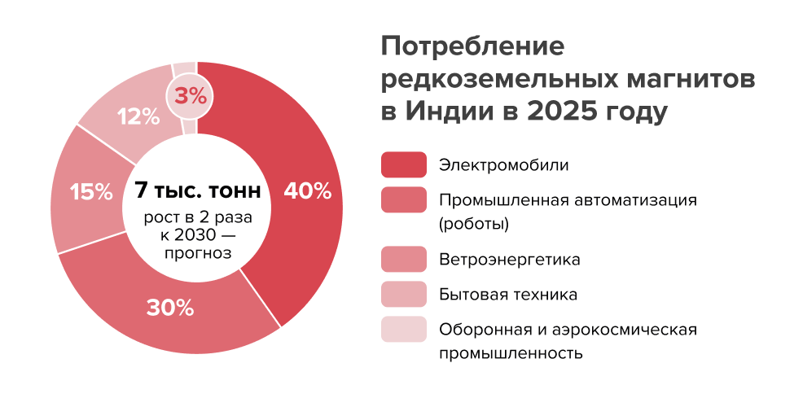
Индия — рост импортозависимости
В 2024–2025 финансовом году Индия импортировала 54 тыс. тонн изделий из редкоземельных магнитов для снабжения автомобильной, ветроэнергетической и электронной промышленности. Перечень включает в себя готовые постоянные магниты (NdFeB), магнитные узлы, компоненты двигателей и встроенные магниты, примерно 60–70% из которых используются в автомобильной/ветроэнергетической промышленности, а 25–35% — в качестве отдельных электронных компонентов. При этом собственного редкоземельного сырья добыто лишь 2,9 тыс. тонн.
За пять лет импорт РЗМ в Индию почти утроился, с 8,7 тыс. тонн, $73 млн (доля Китая 7,6 тыс. тонн, $57 млн) до 54 тыс. тонн, $199 млн, из них Китай — 51 тыс. тонн, $165 млн.
Несмотря на рост внутреннего производства, Индия по-прежнему импортирует более 70% готовых магнитов и редкоземельных магнитных сплавов из Китая.
По подсчетам Министерства тяжелой промышленности, зависимость от импорта из Китая составила за последние три года 82,2%, 88,8% и 90,4% соответственно.
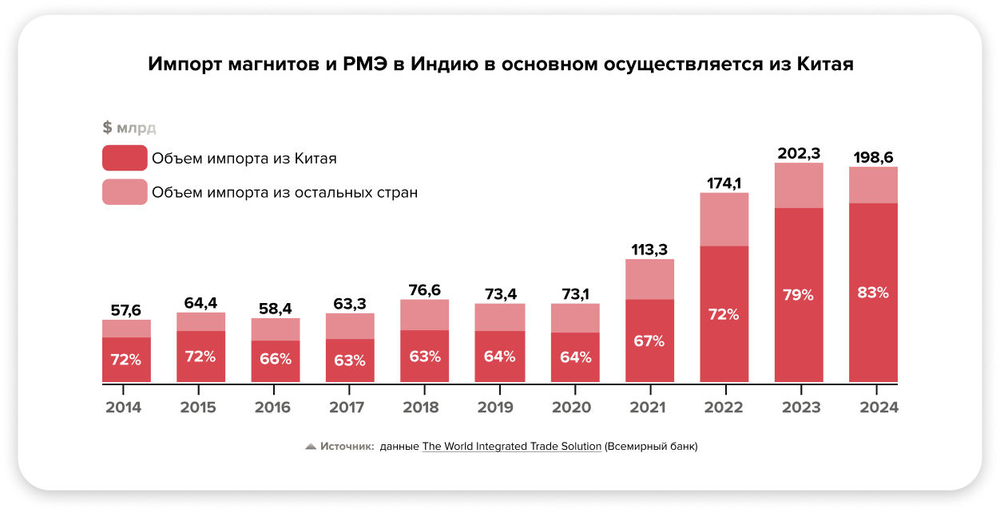
История: 75 лет стагнации
Исторически монополия на добычу и обработку редкоземельных металлов в стране принадлежала компании Indian Rare Earths Ltd, ныне называемой IREL и подчиняющейся Департаменту атомной энергетики.
Дело в том, что большая часть редкоземельной руды, которой располагает Индия, — монацит, минерал, содержащий слаборадиоактивный оксид тория, который в концентрированном виде небезвреден для здоровья. Поэтому обращаться с ним доверили только специалистам атомной отрасли. В результате разработка редкоземельных металлов требовала стольких разрешений, что долгое время IREL занималась ими по остаточному принципу, добывая в основном торий для стратегических нужд. Частный бизнес уполномоченная компания не привлекала.
Между тем монацит содержится в морском песке по всему побережью Индии, его концентрация колеблется от 0,058% до 0,734%. Океанские приливы частично помогают в сепарации минерала, за счет более высокой плотности он скапливается в низинах. Монацит обычно содержит около 55–60% оксидов редкоземельных элементов и около 9–10% оксида тория.
IREL использует технологии разделения и очистки элементов, а также получения сплавов, предоставленные Центром атомных исследований имени Хоми Баба (BARC), Лабораторией металлургических исследований оборонной промышленности (DMRL) и Международным центром передовых исследований в области порошковой металлургии и новых материалов (ARCI).
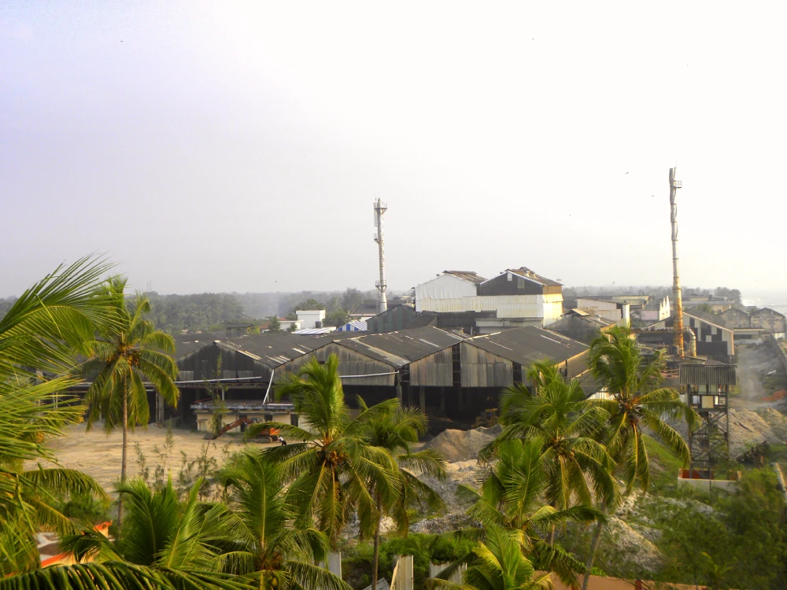
Крупнейшие подразделения IREL
- Rare Earths Division (RED) (Удьогамандал, штат Керала) — оксиды редкоземельных металлов
- Monazite Processing Plant Orissa
- High Pure Rare Earth facility
- Manavalakurichi unit
- Chavara Mineral Division
- The Corporate Research Centre (Kollam, Kerala)
- IREL Technology Development Council (IRELTDC)
- Odisha Sand Complex и OSCOM — Rare Earth Extraction Plant (REEP) (Чхатрапур, штат Одиша) — минералы
- Rare Earth Permanent Magnet Plant (REPM), Vishakapatnam, выпускает самарий-кобальтовые магниты, запущен в 2023 году
Привлекать частный бизнес и масштабировать производство до недавнего времени не планировалось.
Особое место на индийском рынке традиционно занимала Toyota Tsusho Corporation, подразделение автомобильного гиганта «Тойота», занимающееся торговлей металлами и их производством. Ее индийская дочка Toyota Tsusho Rare Earth India с 2012 года закупала у IREL редкоземельные металлы, перерабатывала и экспортировала их в Японию для производства магнитов. В 2024 году она отгрузила более 1 тыс. тонн редкоземельных материалов, то есть свыше трети от 2,9 тыс. тонн редкоземельных элементов, добытых IREL. Приход на индийский рынок японской компании, владеющей передовыми технологиями, и активизация экспорта в Японию в 2016 году расценивались как серьезный фактор развития отрасли.
Крупнейшие игроки рынка магнитов Индии
Ashvini Magnets Pvt Ltd
- Основана в 1996 году. Штаб-квартира — Хинджавади, штат Махараштра.
- Занимает более 80% рынка литых магнитов Индии — как ферритовых, так и редкоземельных.
Midwest Advanced Materials
- Основана в 2022 году. Штаб-квартира — Хайдерабад, штат Телангана.
- Компания аффилирована с гигантом Midwest Ltd, добывающим до 70 тонн монацита в год (данные 2022 года).
- В мае 2025 года получила господдержку Совета по развитию технологий Департамента науки и технологии для создания предприятия полного цикла по изготовлению неодимовых магнитов. В качестве источников сырья назывались собственные месторождения материнской компании, поставки IREL и приобретение месторождения в Бангладеш.
- Планировалось, что демонстрационное производство будет запущено в декабре 2025 года с начальной мощностью 500 тонн в год из 150–170 тонн оксида неодима и к 2030 году выйдет на объем 5 тыс. тонн в год, что потребует дополнительных инвестиций $108 млн. Однако новостей о запусках завода не поступало.
Kumar Magnet Industries
- Основана в 1986 году. Штаб-квартира — Ахмедабад, штат Гуджарат.
- Производит готовые NdFeB-магниты для промышленного и бытового применения.
- Выручка и объем производства не раскрываются.
- Импортирует сырье (оксиды редкоземельных металлов) из Китая.
- Производит и поставляет неодим-железо-борные (NdFeB) магниты, включая спеченные и связанные магниты для промышленного использования.
IREL (India) Limited
- Ранее известная как Indian Rare Earths Ltd — индийское государственное предприятие.
- Основана в 1950 году. Штаб-квартира — Мумбаи, штат Махараштра.
- Занимается добычей и производством тория и редкоземельных минералов, а также изготовлением магнитов.
Toyotsu Rare Earths India Pvt Ltd
- Основана в 2009 году. Штаб-квартира — деревня Гураджапалем, штат Андхра-Прадеш.
- Дочернее предприятие японской Toyota Tsusho, подразделение автоконцерна, специализирующееся на редкоземельных компонентах.
- Выпускает оксиды празеодима, неодима и соединения других редкоземельных металлов, экспортирует в Японию.
Jai Mag Industries
- Некрупный производитель ферритовых и неодимовых магнитов.
- Основана в 2005 году. Штаб-квартира — Сурат, штат Гуджарат.
- Gujarat Mineral Development Corporation (GMDC).
- Основана в 1963 году, штаб-квартира — Ахмедабад, штат Гуджарат.
- Принадлежит правительству штата Гуджарат.
- Компания GMDC занимает 469-е место среди индийских компаний из списка Fortune 500 и входит в пятерку крупнейших предприятий в горнодобывающем секторе. Имеются подразделения, работающие в сфере тепловой, ветровой и солнечной энергетик.
- Об интересе к редкоземельным магнитам компания заявляла, но официально ни в одном проекте не участвует.
Редкоземельное оружие — момент истины
В ходе торговой войны Китая и США, разгоревшейся с новой силой с возвращением Дональда Трампа в Белый Дом, Пекин использовал крайний аргумент — в начале апреля 2025 года в ответ на высокие пошлины США Китай усложнил процесс сертификации конечных пользователей. От импортеров стали требовать подтверждения того, что магниты не будут использоваться в оборонной промышленности или реэкспортироваться в Соединенные Штаты.
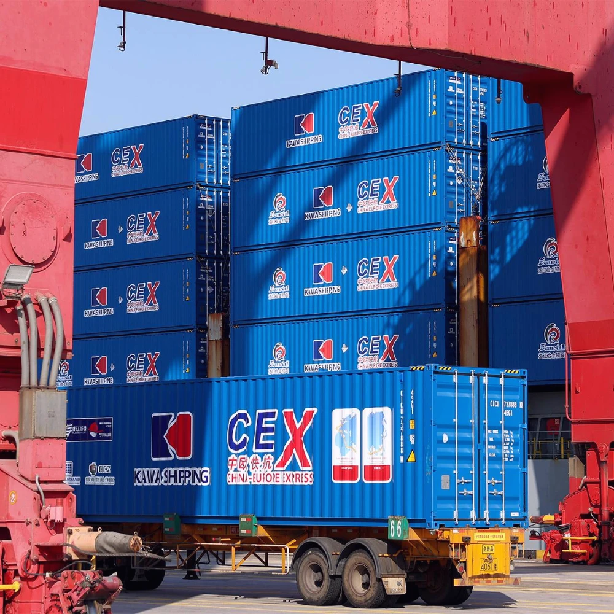
Введение экспортных лицензий было направлено прежде всего против США, но после того как экспорт магнитов из Китая за месяц упал на 51%, оказалось, что данная мера ударила по всем мировым рынкам, не только по американскому. Повсюду такие автогиганты, как BMW, Ford и Suzuki, приостанавливали сборку на несколько недель, корректировались сроки монтажа ветряных турбин, военные производства готовились экстренно перейти на использование складских резервов.
Суммарное снижение поставок в США составило 58%, а в Индию — целых 78%. Процесс оформления лицензии занимал не менее 45 дней, причем из 30 заявок на импорт, поддержанных правительством Индии, не была одобрена ни одна. Согласно докладу Общества индийских автопроизводителей (SIAM), прозвучавшему 28 мая перед правительственными чиновниками страны, индийские автопроизводители запросили срочные переговоры между Китаем и Индией для ускорения рассмотрения заявок.
Уже в июне Трамп и Си Цзиньпин договорились о торговом перемирии. Восстанавливаясь, объем поставок подскочил на 660%, и вскоре рынок зажил почти нормальной жизнью, хотя прошлогодний уровень так и не был достигнут.
Однако вернуться на старые позиции психологически бизнес уже не смог. Как пишут индийские авторы, рынок РЗМ пришел к пониманию, что надежность и доверие важнее цены. Рынок, развивавшийся лишь в сторону оптимизации расходов, оказался хрупким. Цепочки поставок редкоземельных элементов перестали быть чисто коммерческими. Они стали стратегическими.
Этот эпизод подтвердил реальность, которая незаметно формировалась в течение последнего десятилетия. Редкоземельные элементы теперь не просто промышленное сырье. Это стратегические материалы, доступность которых, перемещение и контроль над которыми напрямую влияют на конкурентоспособность страны, непрерывность промышленного производства и геополитическое влияние.
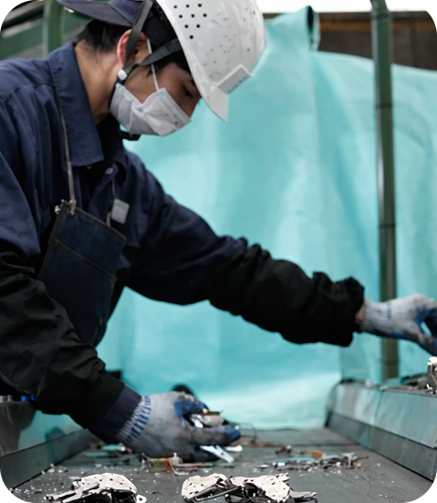
Индия — государство возрождает отрасль
Геополитические риски побудили власти Индии разработать контрстратегию.
В январе 2025 года Индия запустила Национальную миссию по критически важным минералам (NCMM) с начальным бюджетом в $1,8 млрд (16 400 крор рупий) и возможностью расширения бюджета до $3,8 млрд (34 300 крор рупий) на семилетний период с 2024–2025 финансового года (FY25) по 2030–2031 финансовый год (FY31). Конечная цель NCMM — обеспечить и укрепить поставки 30 критически важных минералов, необходимых для современных технологий, таких как электромобили (EV), солнечные батареи, электроника, оборонные системы и экологически чистая энергетика. Одна из промежуточных целей — наладить производство редкоземельных магнитов.
Создается Национальный резерв критически важных минералов для поддержания двухмесячного запаса редкоземельных элементов.
Данная инициатива ускоряет геологоразведку с помощью 1200 проектов, запланированных Геологической службой Индии (GSI) (2024–2031 годы), и нацелена на проведение аукционов по продаже прав на разработку более чем 100 минеральных блоков частным компаниям.
Программа способствует приобретению зарубежных активов через компанию Khanij Bidesh India Limited (KABIL) и направлена на создание национального запаса как минимум пяти критически важных минералов.
Она учреждает центры передового опыта (цель — 1000 патентов) для НИОКР и содействует переработке электронных отходов и батарейного лома с бюджетом в $164 млн (1500 крор рупий).
Приостановка соглашения о поставках с Японией
В середине 2025 года Индия сделала ход, обескураживший долговременных партнеров, — приостановила действие экспортного соглашения с Японией, чтобы обеспечить внутренние поставки. Договоренности, действовавшие 13 лет, оказались недействительными, хотя раньше им придавалось большое значение.
Постоянные магниты из редкоземельных элементов (REPM)
В ноябре правительство Индии одобрило программу стоимостью $800 млн (7280 крор рупий) для содействия производству спеченных постоянных магнитов из редкоземельных элементов (REPM). Эта инициатива является частью Национальной миссии по критически важным минералам (NCMM), которая включает в себя стимулы, связанные с продажами, и капитальные субсидии в течение семи лет.
Цель этой инициативы — за ближайшие семь лет создать интегрированную производственную мощность в 6 тыс. метрических тонн в год (MTPA), охватывающую всю цепочку создания стоимости от оксида редкоземельных элементов до готовых магнитов.
Этот проект важен для снижения зависимости от импорта (в основном из Китая) в таких отраслях, как электромобили, возобновляемая энергия, электроника, аэрокосмическая и оборонная промышленность.
Схема включает в себя $710 млн (6450 крор рупий) в качестве стимулирующих выплат, привязанных к объему продаж, в течение пяти лет и $83 млн (750 крор рупий) в качестве субсидий на создание производственных мощностей.
Эта инициатива администрируется Департаментом атомной энергии (DAE) и поддерживается политическими реформами в рамках Закона о регулировании добычи полезных ископаемых (MMDR Act).
Крупнейшие промышленные группы страны, включая Adani Enterprises, Reliance Industries, JSW Group, Kalyani Group и Maruti Suzuki India, проявили первоначальный интерес к предложенному правительством проекту по стимулированию производства редкоземельных постоянных магнитов (РЗПМ).
Представители этих компаний приняли участие во встрече с правительством. Хотя интерес высок, промышленники ожидают окончательного запроса предложений (RFP) прежде чем вкладывать капитал. «После объявления конкурса компании оценят структуру стимулирования и согласуют участие со своими конкретными бизнес-требованиями», — сказал один из присутствующих на встрече.
Компания Maruti Suzuki India совместно с производителем автокомпонентов Sona BLW Precision Forgings нуждаются в редкоземельных магнитах для электроприводов и тяговых двигателей.
Reliance Industries Industries будет использовать магниты в своих платформах возобновляемой энергетики, инициативах по производству аккумуляторов и экосистеме зеленого водорода.
JSW Group и Kalyani Group изучают возможности применения в компонентах электромобилей, оборудовании для ветроэнергетики, аэрокосмической и оборонной промышленности.
Adani Enterprises будет использовать редкоземельные магниты в возобновляемой энергетике, оборонной электронике и инфраструктуре центров обработки данных.
Такие компании, как Attero Recycling, Lohum Cleantech и Runaya (подразделение Vedanta), сосредоточены на извлечении редкоземельных материалов из отслужившей свой срок электроники и батарей.
В то же время специализированные производители магнитов — включая Permanent Magnets, Ashvini Magnets и Midwest Advanced Materials — уже присутствуют в индийской внутренней экосистеме магнитов. Они также приняли участие во встрече.
Всем этим специализированным производителям магнитов в настоящее время не хватает возможностей для производства тяжелых редкоземельных магнитов, которые имеют решающее значение для высокотемпературных и высокоэффективных применений.
Аналитики отрасли отмечают: все очевиднее, что доступ к редкоземельным магнитам станет долгосрочной стратегической необходимостью.
Прогнозы экспертов и проблемы
Оптимистичный прогноз: не исключено, что реализация Национальной политики Индии в области редкоземельных элементов к 2030 году продвинет страну по пути к превращению во второй альтернативный центр в глобальной цепочке поставок редкоземельных элементов.
Экология: обработка радиоактивного тория при добыче РЗМ из монацита остается технической проблемой.
Технологический разрыв: технология производства высококоэрцитивных магнитов (с добавлением диспрозия и тербия) по-прежнему контролируется Японией, Германией и Китаем.
Недостаточные инвестиции: развитие полноценной экосистемы редкоземельных элементов — дорогостоящий, сложный и трудоемкий процесс. Сосредоточившись на магнитах, одном из наиболее широко используемых редкоземельных продуктов, Индия стремится быстрее достичь самообеспечения. Для создания полностью интегрированного промышленного предприятия по разделению редкоземельных элементов требуется $1,5–2 млрд капитальных инвестиций и 5–7 лет строительства. Меньшие демонстрационные или пилотные установки могут быть разработаны за $100–300 млн с более длительными сроками квалификации, однако они не достигают коммерческой конкурентоспособности.
Сдержанно-пессимистические прогнозы индийских экспертов собрали журналисты BBC в публикации «Насколько реалистична цель Индии по созданию редкоземельных магнитов?» в январе 2025 года:
«Индия не одинока в своих попытках найти альтернативы. ЕС, Австралия и другие страны предприняли аналогичные усилия, чтобы ослабить контроль Китая. Для многих государств “время введения контроля” стало неожиданностью», — считает Раджниш Гупта, специалист по налоговой и экономической политике в EY India. Однако у Индии в этой области отсутствует промышленный опыт. Такие страны, как Япония, Южная Корея и Германия, годами совершенствовали технологии производства магнитов. Индия же по сравнению с ними практически не имеет опыта в коммерческом масштабе.
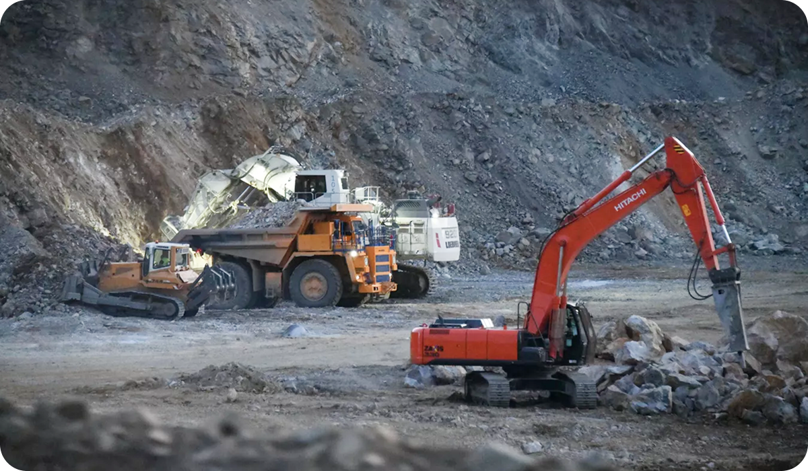
«Это хороший шаг в правильном направлении, но это только начало, — говорит Неха Мукерджи из Benchmark Mineral Intelligence, консалтинговой фирмы, занимающейся батареями и редкоземельными элементами. — Индии потребуются стратегические партнерства для импорта технологий, повышения квалификации рабочей силы и последующего развития собственных возможностей».
Доктор П. В. Сундер Раджу, главный научный сотрудник Национального геофизического исследовательского института (NGRI), разделяет эту обеспокоенность: «Невозможно просто дать 73 млрд рупий и ожидать результата без прочной базы в области исследований и разработок». Ученый отмечает, что существует несколько исследовательских центров, которые могут справиться с этой задачей.
Эксперты констатируют, что два крупных объекта, запущенные в последние годы, пока так и не сообщили о результатах производства. Это открытый в 2023 году объект IREL India ltd REPM production facility / Rare Earth Permanent Magnet Plant in Visakhapatnam в Атомном исследовательском центре им. Бхабхи, а также Midwest Advanced Materials Private Limited (MAM), стартовавший в 2024 году вХайдерабаде. На предприятии планируется к 2030-му производить 5 тыс. тонн магнитов ежегодно.
В Индии наблюдается избыток легких редкоземельных элементов, таких как неодим, но ей не хватает доступных для извлечения более тяжелых элементов, таких как диспрозий и тербий, имеющих решающее значение для многих высокоэффективных магнитов. Возникает вопрос: даже если магниты будут производиться в Индии, станет ли сырье по-прежнему поступать из Китая?
Также существуют опасения по поводу масштабов этой операции. По словам Нехи Мукерджи, Индия уже потребляет около 7 тыс. тонн магнитов в год. Производство 6 тыс. тонн к началу 2030-х годов, вероятно, оставит страну все в тех же дефиците и уязвимом положении, поскольку спрос продолжает расти. «Если мы не увеличим мощности, проблема не будет решена. Мы по-прежнему будем зависеть от Китая, а Китай продолжит наращивать производство».
Еще одной проблемой, по мнению экспертов, станет такое установление цен на магниты индийского производства, при котором их цена не снижаетсяиз-за импорта. Китайские магниты дешевы, и если индийские аналоги не будут конкурентоспособны по цене, импорт продолжит доминировать. Решением, как утверждают некоторые, может стать стимулирование не только производителей, но и покупателей. «Есть надежда, что индийские игроки продолжат вкладывать свою предпринимательскую энергию и развивать экосистему», — говорит г-н Гупта. Несмотря на трудности, внедрение этой схемы подтверждает стремление Индии укрепить собственную экосистему редкоземельных элементов. «Я думаю, это безусловно лучше, чем вообще не предпринимать этот шаг».
Крупнейшие промышленные группы страны, включая Adani Enterprises, Reliance Industries, JSW Group, Kalyani Group и Maruti Suzuki India, проявили первоначальный интерес к предложенному правительством проекту по стимулированию производства редкоземельных постоянных магнитов (РЗПМ).
Представители этих компаний приняли участие во встрече с правительством. Хотя интерес высок, промышленники ожидают окончательного запроса предложений (RFP) прежде чем вкладывать капитал. «После объявления конкурса компании оценят структуру стимулирования и согласуют участие со своими конкретными бизнес-требованиями», — сказал один из присутствующих на встрече.
Компания Maruti Suzuki India совместно с производителем автокомпонентов Sona BLW Precision Forgings нуждаются в редкоземельных магнитах для электроприводов и тяговых двигателей.
Reliance Industries Industries будет использовать магниты в своих платформах возобновляемой энергетики, инициативах по производству аккумуляторов и экосистеме зеленого водорода.
JSW Group и Kalyani Group изучают возможности применения в компонентах электромобилей, оборудовании для ветроэнергетики, аэрокосмической и оборонной промышленности.
Adani Enterprises будет использовать редкоземельные магниты в возобновляемой энергетике, оборонной электронике и инфраструктуре центров обработки данных.
Такие компании, как Attero Recycling, Lohum Cleantech и Runaya (подразделение Vedanta), сосредоточены на извлечении редкоземельных материалов из отслужившей свой срок электроники и батарей.
В то же время специализированные производители магнитов — включая Permanent Magnets, Ashvini Magnets и Midwest Advanced Materials — уже присутствуют в индийской внутренней экосистеме магнитов. Они также приняли участие во встрече.
Всем этим специализированным производителям магнитов в настоящее время не хватает возможностей для производства тяжелых редкоземельных магнитов, которые имеют решающее значение для высокотемпературных и высокоэффективных применений.
Аналитики отрасли отмечают: все очевиднее, что доступ к редкоземельным магнитам станет долгосрочной стратегической необходимостью.
В Индии наблюдается избыток легких редкоземельных элементов, таких как неодим, но ей не хватает доступных для извлечения более тяжелых элементов, таких как диспрозий и тербий, имеющих решающее значение для многих высокоэффективных магнитов. Возникает вопрос: даже если магниты будут производиться в Индии, станет ли сырье по-прежнему поступать из Китая?
Также существуют опасения по поводу масштабов этой операции. По словам Нехи Мукерджи, Индия уже потребляет около 7 тыс. тонн магнитов в год. Производство 6 тыс. тонн к началу 2030-х годов, вероятно, оставит страну все в тех же дефиците и уязвимом положении, поскольку спрос продолжает расти. «Если мы не увеличим мощности, проблема не будет решена. Мы по-прежнему будем зависеть от Китая, а Китай продолжит наращивать производство».
Китайские эксперты, опрошенные Shanghai Metal Market, со своей стороны видят дополнительные препятствия для реализации проекта:
Отсутствие у Индии собственных передовых технологий разделения и очистки РЗЭ существенно осложняет производство продукции, соответствующей современным требованиям.
Плохая инфраструктура Индии препятствует развитию проектов по редкоземельным элементам.
Отсутствие дорог: хотя Андхра-Прадеш обладает относительно развитой дорожной сетью, на некоторых участках качество путей низкое, многие из них грунтовые, и лишь менее 15% пригодны для тяжелых грузовиков для перевозки руды.
Наиболее критичной проблемой является нехватка электроэнергии. В Тамилнаде дефицит достигает 6 тыс. МВт, что серьезно ограничивает добычу редкоземельных элементов.
Немаловажные сдерживающие факторы — нестабильность местной политики и серьезная бюрократическая коррупция. На национальном уровне декларируется желание ускорить разработку редкоземельных месторождений, но многие представители отрасли указывают, что реализация проектов на уровне штатов представляет совершенно иную реальность.
Это приводит к выжидательной позиции инвесторов и предприятий редкоземельной отрасли, поскольку никто не хочет работать в условиях неопределенности.
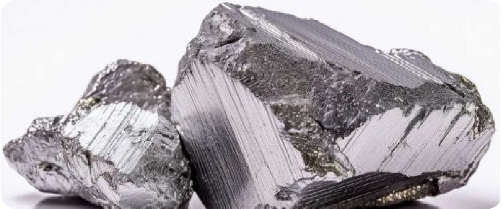
Rare Earth Exchanges: успех или неудача Индии будут зависеть от промышленного производства. Если Индия создаст надежную систему переработки (и, в конечном итоге, производство магнитов), она станет стратегическим партнером в цепочках поставок полупроводников и оборонной промышленности. В противном случае «диверсификация» рискует превратиться в театрализованное представление — экспорт концентратов за границу и обратная покупка новых источников дохода.
Выводы
01
Индия делает правильные шаги по развитию экосистемы РЗМ, однако много времени упущено, и приходится догонять. Можно ожидать дальнейших мер государства по стимулированию этого сектора.
02
Зарубежные игроки, владеющие конкурентоспособными технологиями, в обозримом будущем станут желанными партнерами для индийских компаний по производству РЗМ.
03
При существующем невысоком уровне государственных субсидий перерабатывающая промышленность РЗМ будет нуждаться в инвестициях, что дает возможность для переговоров о партнерстве с иностранными компаниями.
04
Не исключается спрос на создание новых компаний в сфере энергетики и строительства логистических путей для обслуживания растущей индустрии РЗМ.
05
Даже оптимистичный прогноз госрегулятора не предполагает, что Индия в ближайшее время сможет сама удовлетворить внутренний спрос на редкоземельные магниты. Поставки готовых РЗМ в Индию в обозримом будущем останутся актуальными.
06
Тяжелые РЗМ-присадки (тербий, диспрозий) придется импортировать, даже если Индия справится с задачей самообеспечения по неодиму, празеодиму и самарию.